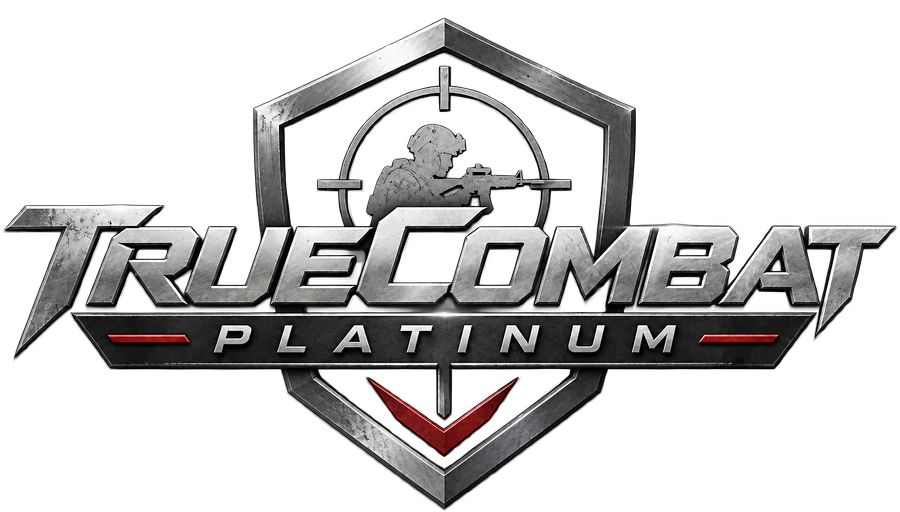
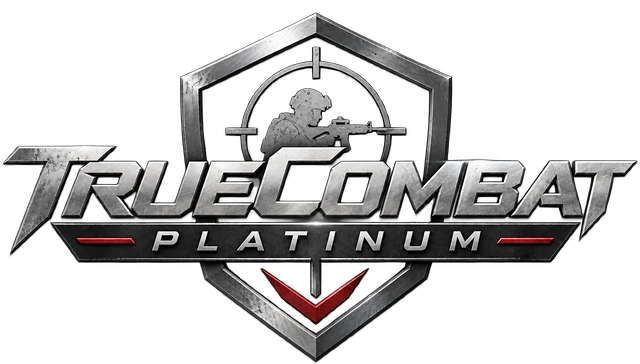
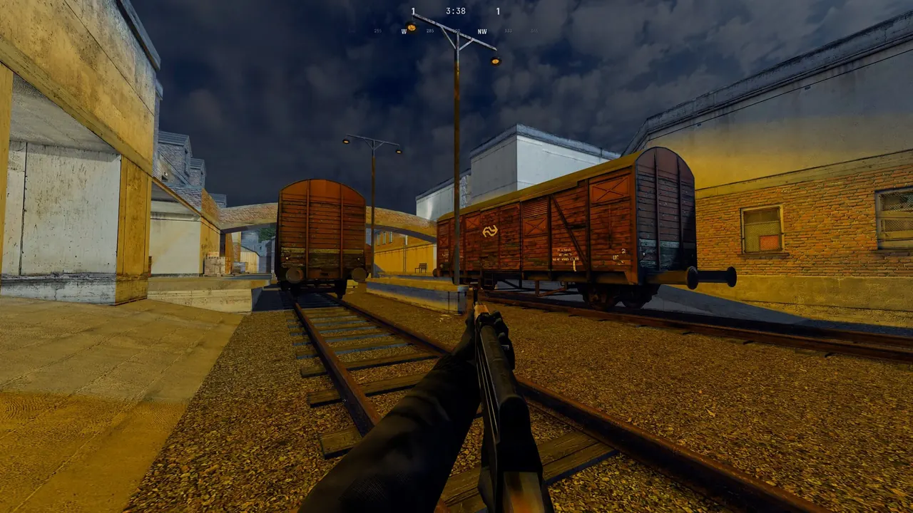
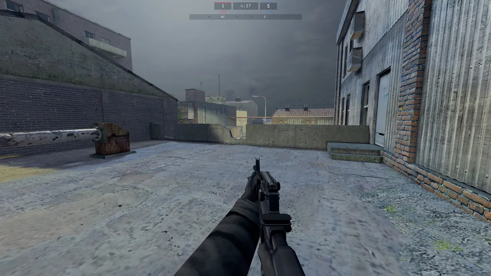
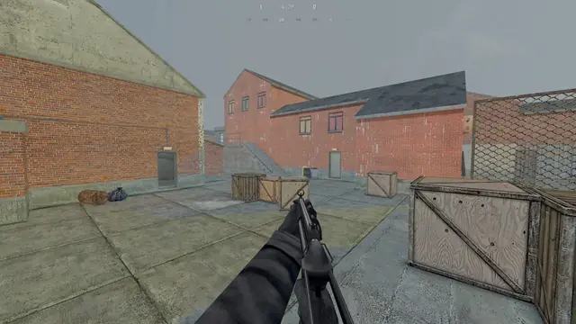

DirectX-12-Renderer
Jedes Bild wird mit DirectX 12 im eigenen Fenster des Spiels gerendert. Kantenglättung, Umgebungsschatten, HDR, Bloom und Schärfung sind optional. Ältere PCs weichen automatisch auf OpenGL aus.
 Neuer DevlogGround up
Neuer DevlogGround up


Der klassische Taktik-Shooter, neu aufgebaut als natives 64-Bit-Spiel mit DirectX-12-Renderer. Die originalen Maps, Soldaten und das HUD, dazu ein Launcher, der deine Server hostet und das Spiel aktuell hält.
Sechs originale Maps, neu aufgebaut auf DirectX 12, reale Waffen und Runden, die ein einziger Fehler entscheidet. Das ist TrueCombat: Platinum in Bewegung.


Das Video wird von YouTube im erweiterten Datenschutzmodus abgespielt. Von YouTube wird nichts geladen, bis du auf Play drückst.
Musik: „Venom“ von Scott Buckley, veröffentlicht unter CC BY 4.0. scottbuckley.com.au
Auf YouTube ansehenA rebuilt interface, a new generation of light and effects, the choice between Remastered and Classic, Season 1, location pings, CQB in the core game, a brand-new map called Lockgate and a long list of changes shaped by your feedback. The full story of update 0.40.0, our biggest yet.
TrueCombat: Elite war eine realistische Total Conversion für Enemy Territory mit modernem Gefecht: ein Leben pro Runde, echte Waffen und Maps für langsames, überlegtes Spiel. Es läuft bis heute als 32-Bit-Mod auf einer Engine von 2003.
TrueCombat: Platinum baut es als natives 64-Bit-Windows-Spiel neu auf. Der Renderer ist neuer DirectX-12-Code, das HUD ist Pixel für Pixel am Original ausgerichtet, und die Bewegungsgeschwindigkeiten stammen direkt aus den Originalwerten. Wenn DirectX 12 Probleme macht, startet Safe start das Spiel mit OpenGL.

Jedes Bild wird mit DirectX 12 im eigenen Fenster des Spiels gerendert. Kantenglättung, Umgebungsschatten, HDR, Bloom und Schärfung sind optional. Ältere PCs weichen automatisch auf OpenGL aus.
Layout, Schriften, Kompass, Ausdaueranzeige, Rundenuhr und Zielzeilen aus TC:E. Die Körpersilhouette wird gelb, orange und rot, wenn du Schaden nimmst.
Sprinte mit Shift, bis deine Ausdauer aufgebraucht ist, lehne dich mit Q und E um Ecken, geh mit C in die Hocke und leg dich mit X hin. Leitern und Wasser funktionieren wie in TC:E, und jede Geschwindigkeit entspricht dem Original.
Jeder Schuss trifft eine Zone mit eigenem Schaden. Wer hockt oder liegt, bietet ein kleineres Ziel.
Alle 27 Schusswaffen, das Messer und jede Granate, mit originalem Schaden, Rückstoß und Streuung. Geschosse durchschlagen Türen, Wände und Kisten und verlieren mit jeder Fläche an Kraft.
Der Launcher prüft GitHub auf neue Versionen, zeigt Downloadtempo und Restzeit und installiert nur Updates, die von Team Terminus signiert sind. Deine Einstellungen und Server bleiben erhalten.



Jedes Bild ist eine direkte Aufnahme aus dem DirectX-12-Renderer. Nichts ist nachbearbeitet.





Zieh über das Bild, um den originalen Look mit den neuen Voreinstellungen zu vergleichen. Dieselbe Stelle, dasselbe Bild: der westliche Rangierbahnhof von Railhouse in 1440p.
HD-Texturen für Welt, Modelle, HUD und Menüs sind standardmäßig installiert. Auf RTX-Karten stehen außerdem die DLSS-Qualitätsmodi bereit: Gib in der Konsole r_dx12Dlss 2 bis 5 ein, danach vid_restart.

 Low
Ultra
Low
Ultra

Zwei offizielle EU-Server laufen rund um die Uhr: #1 Ranked, auf dem jedes Match für die Bestenlisten zählt, und #2 Unranked, den Bots belebt halten. Jeder Server, der mit eingeschaltetem List publicly gehostet wird, erscheint hier und im Servers-Tab des Launchers.
Du kannst jederzeit über den Launcher hosten und deine Adresse weitergeben. Andere treten dir standardmäßig über den UDP-Port 27971 bei. Alle in einem Match brauchen dieselbe Version.
| Server | Map | Spieler | Modus |
|---|
Die Live-Serverliste wird geladen. Der Servers-Tab im Launcher zeigt dieselbe Liste.

Ready-up, eine Messerrunde um die Seitenwahl, Halbzeit und taktische Auszeiten, die das ganze Match einfrieren. Ein Befehl auf jedem Server.
Match-Modus
Der realistische Taktik-Shooter auf Basis von Enemy Territory, heute spielbar auf Windows 10 und 11.
TC:E heuteJedes Update seit dem ersten öffentlichen Build steht auf der News-Seite (englisch), dazu gibt es einen RSS-Feed. Downloads liegen bei GitHub Releases.
Lies den Einsteiger-Guide zu Steuerung, Spielmodi und ein paar Tipps, mit denen du länger überlebst. Die Waffenseite listet jede Waffe aus TC:E.
Ja. Lade es bei GitHub Releases herunter und spiel los. Jede Version enthält ihren Quellcode und die Lizenzen der originalen Spieldateien.
Hol dir das Pressekit mit Logos, Screenshots und einem Faktenblatt.
Ja. Wähle im Servers-Tab des Launchers einen offiziellen EU-Server, ranked oder unranked, tritt einem anderen öffentlichen Server bei oder hoste mit wenigen Klicks dein eigenes Match.
Ja, und mehr. Jede Waffe, alle sieben Spielmodi, das originale Bewegungstempo, Lehnen, Leitern, Schwimmen, das Klettern an Kanten und das Scharfschützen-Zielfernrohr sind drin, ergänzt um Neues wie die Live-Minimap und einen kompetitiven Match-Modus. Die Roadmap zeigt, was danach folgt.
Komm auf den Discord von TrueCombat: Platinum. Dort werden Matches organisiert, Server geteilt und neue Versionen zuerst angekündigt.
Drück im Launcher auf Safe start. Damit läuft das Spiel mit OpenGL in einem Fenster mit 1280 × 720, und es weicht auch von selbst auf OpenGL aus, wenn DirectX 12 scheitert.